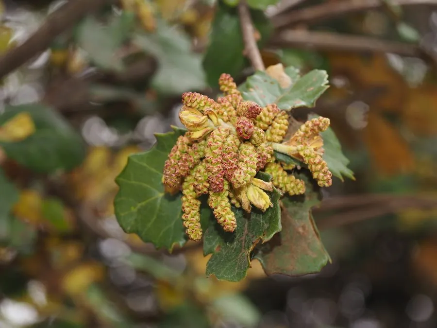

乔木 · 植物界
高山栎 Quercus semecarpifolia

壳斗科栎属常绿乔木，叶厚革质、边缘具刺状锯齿，是喜马拉雅地区高山栎林的主要建群树种，耐寒抗风。
- 分类
- 门被子植物门纲木兰纲目壳斗目科壳斗科属栎属
- 栖息环境
- 海拔 2000–4000 米的高山地带，耐寒抗风、耐瘠薄
- 地理分布
- 中国西藏、云南西北部；尼泊尔、印度、不丹等喜马拉雅地区
- 保护级别
- 暂无评估；未被列入国家重点保护野生植物名录
物种志
高山栎为壳斗科栎属常绿乔木，高可达二十米，树皮灰褐色、纵裂，幼枝密被黄褐色绒毛。叶片厚革质，椭圆形至长卵形，边缘具刺状锯齿，表面深绿有光泽，背面被灰黄色绒毛。花单性，雌雄同株，雄花序为下垂的葇荑花序，雌花单生或数朵生于总苞内，花期五至六月；坚果卵形，壳斗杯状、包围果实基部，果期翌年九至十月。
高山栎分布于中国西藏、云南西北部以及尼泊尔、印度、不丹等地，多生于海拔两千至四千米的高山地带，常形成纯林或与针叶树混生。它耐寒、抗风、耐瘠薄，适宜排水良好的山地棕壤，是喜马拉雅山区重要的水源涵养林树种。木材坚硬耐腐，可供建筑和薪炭用材；树叶可饲养柞蚕，坚果可提取淀粉。高山栎林对维持高原生态平衡具有重要作用。
形态与习性
- 株高可达 20 m，树皮纵裂
- 花期5–6 月，葇荑花序下垂
- 果期翌年 9–10 月，壳斗杯状
- 光照喜光，高山地带光照强
- 水分耐干旱，喜冷凉湿润
- 土壤排水良好的山地棕壤
- 主要用途水源涵养，木材与薪炭
趣味知识
- 高山栎的叶缘有坚硬的刺状锯齿，是适应高山放牧压力演化出的防御特征。
- 它能在海拔四千米左右形成连片森林，是喜马拉雅山区重要的水源涵养林。
- 高山栎的坚果富含淀粉，历史上曾是山区居民的救荒食物。